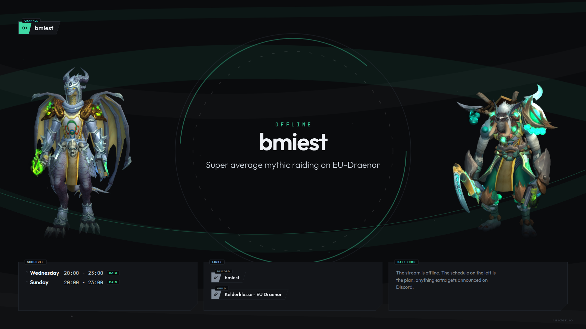
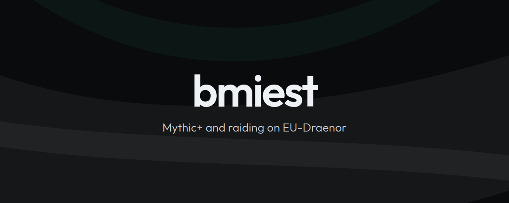
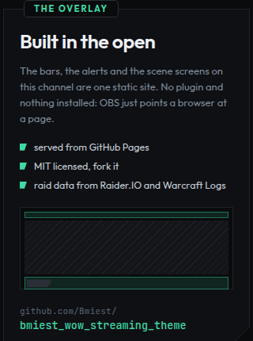

Cut for one specific setup: a 3440x1440 ultrawide that goes out to
Twitch as 2560x1440. The layout starts from that shape — the 368px the
game does not need become a top bar and a bottom bar, and nothing but the
alerts ever crosses the gameplay. What fills them is World of Warcraft:
your characters and their raid progress, the guild's pull count on the
boss you are on, chat and your channel numbers. Three scene screens, a
stinger and a full set of emotes come with it. The pages run from this site, so in OBS you point a
browser source at them and there is nothing else to install. Updating is a
git push.
base URL …
The 1440 pixels of height are split into 120 on top, 1072 of gameplay and 248 below. The top carries session status, the bottom the content: camera, characters, raid progress, chat and recent events. The camera area is a hole in the bottom bar, with your webcam behind it. The alert layer is running in the middle: a follower, a sub, bits, a raid and a tip come past every few seconds, and after those the two raid alerts. It is muted here.
The overlay is built for an ultrawide. Instead of panels floating over the game, the bars are full-width bands above and below it, and what that leaves is a gameplay window of 2560 x 1072. At 2.39:1 that is the shape of a 3440x1440 monitor to within 0.03%, so an ultrawide capture fills it edge to edge with nothing cropped and no black bands. A 16:9 capture works too: you either scale it to the full width and lose some height off the top and bottom, or keep the whole frame and accept a narrow band at each side.
There is nothing to download and nothing to run. OBS fetches the pages from this site, so the whole install is a scene collection, a token and one local video file.
Settings → Video: base and output resolution both
2560x1440, downscale filter Lanczos, 60 FPS. The
layout is that canvas, split into 120 pixels of top bar, 1072 of
gameplay and 248 below, so the sources only land in the right place
if the canvas matches.
Download
obs-scene-collection.pages.json,
open it in a text editor and replace __JWT__ with your
StreamElements JWT. Then Scene Collection → Import and
pick bmiest overlay.
That brings in all seven browser sources at the right size and position, and the five scenes around them. Rather do it by hand? The table below has every URL, size and position.
Want what is on stream in Dutch? Put ?lang=nl on every
browser source, or build the collection with
./make-obs-collection.py --lang nl. The copy buttons
below add it for you while this page is set to NL. Boss, raid and
character names stay as the game writes them.
Scene Transitions → + → Stinger, point it at
stinger.webm and set the transition point
to 500 ms. This is the one file that has to live on your
disk: OBS will not play a stinger transition from a URL. It is
deliberately not in the collection either, because a Windows path
full of backslashes is the one thing that breaks when you edit that
JSON by hand.
Two sources come in as flat colour blocks, named
[VERVANG] Gameplay and [VERVANG] Webcam.
Replace the first with your Game Capture, scale to inner
bounds at 2560 × 1072, and the second with your
Video Capture Device, scale to outer bounds at
340 × 200. The camera area is a punched hole in the
bottom bar, so your webcam belongs behind it, not on top.
Set Custom frame rate to 30 FPS on the two bars. Nothing in them needs 60, and it halves what they cost to render.
Leave Shutdown source when not visible and Refresh browser when scene becomes active off. That way your chat history survives a scene switch, and the clocks on the scene screens still restart when those come on screen.
Tick Control audio via OBS on the alerts source, or the sound never reaches your mix: a peon or orc voice line from WoW on a boss kill, a new best, a follow and a sub.
| Source | What | Size | Position | |
|---|---|---|---|---|
| Top bar | topbar.html | 2560 × 120 | 0, 0 | |
| Bottom bar | banner.html | 2560 × 248 | 0, 1192 | |
| Alerts | alerts.html | 2560 × 1072 | 0, 120 | |
| Starting soon | scene-starting.html | 2560 × 1440 | 0, 0 | |
| Be right back | scene-brb.html | 2560 × 1440 | 0, 0 | |
| Ending | scene-ending.html | 2560 × 1440 | 0, 0 | |
| Just Chatting | chatting.html | 2560 × 1440 | 0, 0 | |
| Game Capture | your game, scale to inner bounds | 2560 × 1072 | 0, 120 | |
| Webcam | Video Capture, scale to outer bounds | 340 × 200 | 24, 1216 | |
| Stinger | Scene Transitions → Stinger, point at 500 ms | stinger.webm | local file |
Your StreamElements token belongs in the URL, as
#jwt=eyJ…. That URL only lives in your OBS configuration,
exactly the way StreamElements' own overlay URL works, so the token is
never on this site. Without one everything still runs, but alerts,
events and the labels stay empty. The copy button hands you the URL
without a token; paste yours on the end in OBS.
Warcraft Logs rides along the same way, as #wcl=… on
every source. It is optional — without it the raid card runs on
Raider.IO alone, exactly as before. With it, Warcraft Logs fills the
card whenever it answers and Raider.IO becomes the fallback, because it
derives its live tracking from the same logs and so can lag but never
lead. It is the one that knows about the kill you just got. What goes in that URL is an
access token, good for a year; the client secret that mints it
stays off this site entirely. compare.html
puts both sources side by side with the verdict underneath, which is the
page to open if the numbers ever look wrong.
These previews are the real pages in an iframe, scaled down, so they show
whatever the overlay shows right now. The chat in them is stand-in text
for what viewers type. The three scene screens start their character
rotation one step apart (?rot=), so you see three different
pairs here instead of the same one three times. The alert previews are
muted; on stream, a kill says "Work complete.", "For the Horde!" or
"Victory or death!", and a new best "Work, work!" or another peon line.
The other five alerts (follow, sub, cheer, tip, raid) get a small burst
of the same fireworks, off to the sides of the alert.
The bottom bar shows two of these at a time and rotates through the rest, and the pause screens do the same with full-body renders. Straight from Raider.IO, so this is the same data the overlay runs on — item level and score included.
Raider.IO derives its live tracking from the same uploaded logs Warcraft Logs keeps, so it can lag but never lead. The card reads both and runs on Warcraft Logs whenever it answers, naming the source it used; Raider.IO stays on as the fallback and for the two things only it has, the boss portrait and the progress line. Below is a real reading, not a mock-up: Raider.IO still had the boss alive at 19 pulls while its own progress line already counted the kill.
Open compare.html with a Warcraft Logs token during a raid and it does this live, every 20 seconds, with the verdict coming from the same code the card uses.


graphics.panels in the config, and
./build-graphics.sh writes them all. Same jade head on
every one: the icon differentiates, the colour holds them together.

config.layout, so it cannot drift away from
what is on screen. Text and URL come from graphics.about.
A PNG cannot be clicked, so give the panel the same link in Twitch's
editor.
Twenty, one for every slot Twitch gives an affiliate, all the same monk:
the wig from the sub goal on a head, in a jade Mistweaver robe with a
priest's collar. Every size is drawn on its own, so upload the
-28, -56 and -112 one by one with
auto-resize off. emotes.html shows all three on
Twitch's dark and light chat; ./build-emotes.py writes them.
The parts fail independently, on purpose. If the StreamElements
socket drops out the labels keep working over the REST call, and the
raid card has two sources plus a memory of the last good answer — so
one of them going down no longer empties it. Add
?health=1 to a URL to see what is not responding and
which source won. That is off by default, because a red warning on
screen is worse than the problem it reports.
#jwt=eyJ…?demo=1?test=1?test=killbest for the other one?test=subsub, follow, cheer, tip, raid?mute=1?health=1?rio=nativewidget or off also work?channel=…?lang=nlen is the default. The browser's own language is ignored there, so OBS on a Dutch Windows does not switch by itself
Everything shares one shape: bars that taper to the right, a caption as
a tag on the edge, and a coloured head block with an icon. The cards are
that same language as a surface, with the bottom-right corner cut off.
The 1px outline is everywhere made of two clip-path layers
on top of each other, because a normal border will not
follow an angled edge.
What is deliberately not in it: gradients. Twitch sends several encodes out at once, and on the bottom rung of that ladder (504 Kbps at 360p) a soft wash across 2560 pixels is the first thing to band. So the colour sits in small areas instead: the head block, the ring around a portrait, a single dot. The background gets its depth from curved bands that cross each other; where two overlap the surface is slightly lighter, and that is the only shading in the whole design. It is one canvas of 2560x1440: the scene screens show all of it, and the two bars show the slice that falls at their own height, so the same composition runs on behind your gameplay.